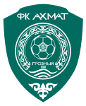

Ахмат Грозный · сборыВторой из трёх предсезонных сборов «Ахмата» проходит в Сербии, на курорте Златибор. Сегодня — контрольный матч с белградским OFK Beograd на стадионе имени Радомира Антича в Ужице. Грозненцев ведёт Станислав Черчесов; в Сербии — весь костяк, сборники вернулись из отпуска.
Игра рабочая, на ногах ещё лежит объём сборов — отсюда возможны массовые замены и вязкость в концовках таймов. Смотрим не на счёт, а на структуру: что Черчесов ставит к первому туру с «Локомотивом».
«Добрый вечер! Мы в сербском Ужице, на стадионе имени Радомира Антича. „Ахмат“ Станислава Черчесова проводит здесь второй из трёх предсезонных сборов и сегодня встречается с белградским OFK. Контрольный матч — но именно из таких вечеров и собирается команда к первому туру».
заготовка под открытие«Сербия, Златибор, предсезонка „Ахмата“. Грозненцы вышли из отпуска первыми в РПЛ, уже провели сбор в Новогорске — и теперь шлифуют форму здесь. Соперник — OFK Beograd, один из старейших клубов сербской столицы. Поехали».
заготовка под открытие«Таким был контрольный матч „Ахмата“ в Сербии. Для Черчесова это материал к работе: ещё один сбор впереди, до 18 июля, потом Грозный и первый тур с „Локомотивом“. А мы прощаемся из Ужице. Шанс есть всегда».
заготовка под закрытиеКоманду ведёт Станислав Черчесов — бывший главный тренер сборной России. Для зрителя это отдельная история: смотрим, какой рисунок он ставит грозненцам на предсезонке.
протокол матчаСтартовый состав — пёстрая география: албанцы Цаке и Максути, ангольцы Касинтура и Келиано, бразилец Силва Лима, сенегальцы Ндонг и Гадио, казахи Самородов и Кенжебек, иранец Заре. Повод поговорить о трансферной модели «Ахмата».
протокол матчаИз молодых в Сербии — двое: Ахмед Эльбердов (2007, молодёжка «Ахмата») и Алексей Касаджиков (2007, из двойки «Зенита»). Оба на просмотре, сегодня на скамейке.
протокол + заготовкаВпереди — Максим Самородов и Эральд Максути. Максути уже отметился на сборах: первый гол в игре с «Космосом» (6:0) — его.
заготовка комментатораЭто второй из трёх сборов. Первый прошёл в Новогорске (грозненцы вышли из отпуска первыми в РПЛ), сейчас Сербия — до 5 июля и затем 9–18 июля, дальше Грозный.
заготовка комментатораУсман Ндонг сегодня не играет — залечивает небольшое повреждение. В заявке остаётся, форсировать не стали.
заготовка + протокол (Out)OFK Beograd — один из старейших и самых титулованных клубов Белграда, «романтичары». В последние сезоны клуб вернулся в элиту сербского футбола.
общая справка№ 77 Марко Гобельич и № 23 Милан Родич — опытные сербские защитники, костяк обороны. Капитан — № 8 Алекса Цветкович, мотор центра. № 11 Тджей Де Барр — игрок сборной Гибралтара.
Match sheet OFKПлотный африканский легион: Эдмунд Аддо (Гана), Якуба Силуэ, Иссиака Дембеле, Мухамаду Фалль, Эрве Туре, Вилли Сие. Имена непростые на произношение — держи лист протокола под рукой.
Match sheet OFKГлавный тренер OFK Beograd — Йован Дамьянович.
Match sheet OFK